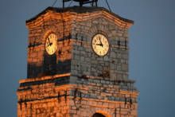
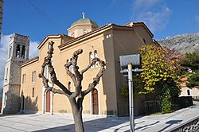
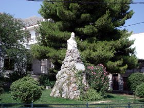

Χτισμένο στα 1860 ως καμπαναριό του Μητροπολιτικού Ναού των Εισοδίων της Θεοτόκου, δεν άντεξε στον σεισμό του 1870 και κατέρρευσε.
Στα τέλη του 19ου αιώνα ο ηγούμενος της Ιεράς Μονής Οσίου Λουκά, Γρηγόριος Καμβασινός, οποίος είχε καταγωγή από την Αράχωβα, ανέλαβε με δικά του έξοδα την ανακατασκευή του, δίνοντας του τη σημερινή μορφή του.
Όσο για το βράχο στον οποίο βρίσκεται, ονομάζεται Τυριάς και χρησίμευε ως φυσικό ψυγείο για τη φύλαξη τυριών, ενώ στη διάρκεια της Κατοχής οι ντόπιοι έκρυβαν εκεί μέσα διάφορα αντικείμενα. Σύμφωνα με εξιστορήσεις των Αραχωβιτών, στο σημείο εκείνο ανέβαινε ο Ντελάλης για να ανακοινώνει τα νέα του χωριού.

Ο Ιερός Ναός του Αγίου Γεωργίου είναι ένας από τους δύο ενοριακούς ναούς του χωριού και βρίσκεται σε περίοπτη θέση στην κορυφή του χωριού, στους πρόποδες του Παρνασσού.
Η εκκλησία αυτή εντυπωσίαζε πάντα τους ξένους. Γραπτές μαρτυρίες βεβαιώνουν πως υπήρχε ήδη ναός το 1676. Όμως είναι άγνωστο πόσα χρόνια πριν υπήρχε ήδη στο ίδιο χώρο.
Ο σημερινός ναός χτίστηκε το 1833, όπως δείχνει ανάγλυφη πλάκα στο Ιερό Βήμα, σε ρυθμό σταυρεπίστεγης τρίκλιτης βασιλικής με τρούλο. Πρόκειται για ένα λαμπρό ναό, κατάγραφο από σύγχρονες τοιχογραφίες, με τεράστιες καμπάνες στα καμπαναριά που πλαισιώνουν την είσοδο της εκκλησίας (η παλιά μεγάλη καμπάνα ζυγίζει ένα τόνο και έχει διάμετρο 1,2 μέτρα). Ο αύλειος χώρος στολίζεται από ανάγλυφες πλάκες με σχέδια από αραχωβίτικα υφαντά, έργο που υλοποιήσαν Αραχωβίτες τεχνίτες.
Ο χώρος γύρω από την εκκλησία έχει συνδεθεί με την ιστορία του τόπου ως στρατηγείο του Καραϊσκάκη στη μάχη της Αράχωβας το 1826, καθώς και με τα γεγονότα του Β΄ Παγκοσμίου Πολέμου και της περιόδου που ακολούθησε, όπως δείχνουν ο ιστορικός περίβολος με τις πολεμίστρες το παλιό κανόνι, ο βόρειος τοίχος της εκκλησίας χτυπημένος από σφαίρες.
Το Υπουργείο Πολιτισμού στις 11 Ιουλίου 2000 με την απόφαση ΥΠΠΟ/ΑΡΧ/Β1/Φ26/ΚΗΡ/22508/680 έχει χαρακτηρίσει το ναό, τον περίβολο και το παρεκκλήσι του Αγίου Σπυρίδωνος ως ιστορικό διατηρητέο μνημείο.
Από την ανέγερσή του μέχρι τη σημερινή μορφή του όλα τα έξοδα κατασκευής και διακόσμησης καλύφθηκαν από τους Αραχωβίτες.

Στη δυτική έξοδο της Αράχωβας προβάλλει η μορφή του Γεωργίου Καραϊσκάκη πάνω σε τριακόσιες πέτρες που θυμίζουν τα κεφάλια των νεκρών Τούρκων που είχε ζητήσει ο αρχιστράτηγος Καραϊσκάκης, για το μνημείο που στήθηκε, αμέσως μετά το τέλος της νικηφόρας Μάχης.
Στο Ηρώο λαμβάνουν χώρα εκδηλώσεις τις παραμονές των εθνικών εορτών με τις παρελάσεις των σχολείων και τις καταθέσεις στεφάνων από τους τοπικούς φορείς.
Ως έθιμο έχει φτάσει έως τις μέρες μας, ένας μικρός μαθητής του Δημοτικού Σχολείου Αράχωβας συνήθως, με το πέρας της κατάθεσης να παίρνει ένα από τα στεφάνια και σκαρφαλώνοντας έως την προτομή από το πίσω μέρος να δαφνοστεφανώνει το μεγάλο στρατηγό της Ελλάδας και έπειτα να του στρίβει τα μουστάκια με τέτοια απλότητα, όπως ο εγγονός παίζει με τον παππού του.